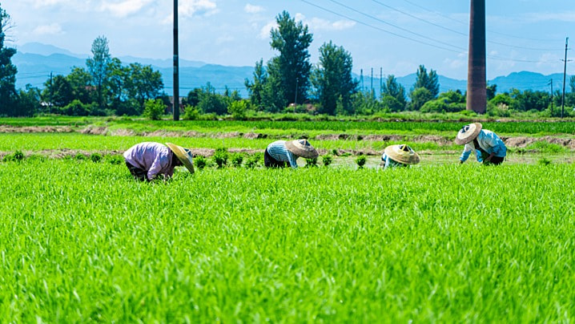

About
AgroTasker is dedicated to bridging agriculture and technology, creating smart digital solutions that help farmers and agribusinesses grow, innovate, and succeed.
About AgroTasker
AgroTasker is a technology-driven platform focused on empowering the agricultural sector through smart app development solutions. We believe that by combining innovation with real-world farming needs, we can help farmers, agribusinesses, and agricultural communities thrive in the digital age. Our mission is to provide simple, effective, and reliable digital tools that enhance productivity, streamline operations, and support sustainable growth. At AgroTasker, we are passionate about building a future where technology and agriculture work hand-in-hand to create a smarter, more connected world.
- Technology Meets Agriculture
- Empowering Growth and Innovation
- Passionate About the Future

AgroTasker: Revolutionizing Agricultural Task Management
AgroTasker is a smart task management platform designed to streamline farming operations. It’s built for farmers, agribusinesses, cooperatives, and agricultural organizations, offering a powerful solution to tackle everyday challenges in agriculture. Here’s a look at the target market that benefits from AgroTasker:
Small and Medium-Sized Farms
Challenges: Limited resources, task management, and scheduling
How AgroTasker Helps:
- Plan and track tasks efficiently
- Optimize resource use and increase yields
Large Agribusinesses
Challenges: Coordinating large teams and complex operations
How AgroTasker Helps:
- Centralize task management across farms
- Improve scheduling, monitoring, and performance tracking
Agricultural Cooperatives & Organizations
Challenges: Aligning diverse members and managing collective tasks
How AgroTasker Helps:
- Facilitate communication and task delegation
- Track progress and improve collaboration
Agricultural Consultants & Technologists
Challenges: Offering real-time, data-driven advice to farmers
How AgroTasker Helps:
- Provide actionable insights based on real-time data
- Enhance advisory services and farmer engagement
Agritech Startups
Challenges: Scaling innovative agricultural technologies
How AgroTasker Helps:
- Integrate with other technologies like IoT and AI
- Simplify operations and enhance data collection for better decision-making
Team
Meet the Team Behind AgroTasker